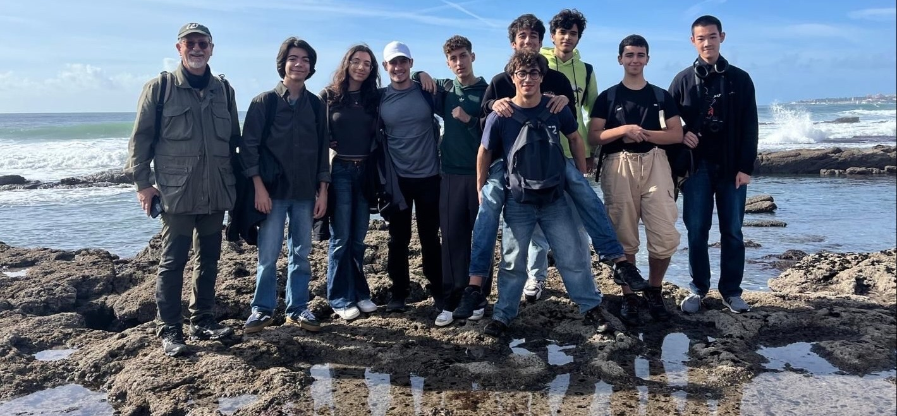
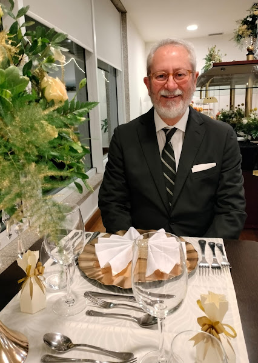

Quem somos?
Coordenador do Clube: João Santos

Professor de Biologia e Geologia
Mestre
Cozinheiro
Agente Secreto
Equipa de Professores:
Alda Pais, Anabela Teixeira, Catarina Leal, Hugo Carmo, Cassilda Paz, Isabel Trigueiros, Eduardo Jorge Gomes, Noémia Felix, Carlos Castro, António Rosa e Margarida Paiva.
Equipa de Alunos:
Alunos das turmas: 10ºA, 10ºC, 11ºD, 11ºE, 12ºA
O clube está aberto a todos os alunos que tenham interesse em participar em atividades de caráter científico e na sua divulgação. Assim, haverá alunos diretamente envolvidos nas atividades programadas e os restantes alunos e comunidade escolar participarão das apresentações e eventos organizados pelo +CIÊNCI@CAMÕES.
Somos um Clube Ciência Viva, +CIÊNCI@CAMÕES, criado sob o tema Património Natural e Cultural e que vai fazer parte da Rede Nacional de Clubes Ciência Viva.
Na génese do +CIÊNCI@CAMÕES está a parceria com o MUESC e, por isso, será muito relevante considerar a utilização do património para perceber o contexto, os fenómenos e a história da ciência. Sempre que possível as nossas atividades serão desenvolvidas tendo como matriz fundamental esta ligação umbilical ao MUESC.
Para dar qualidade e credibilidade aos nossos projetos vamos estabelecer acordos de parceria científica, com investigadores e instituições científicas.